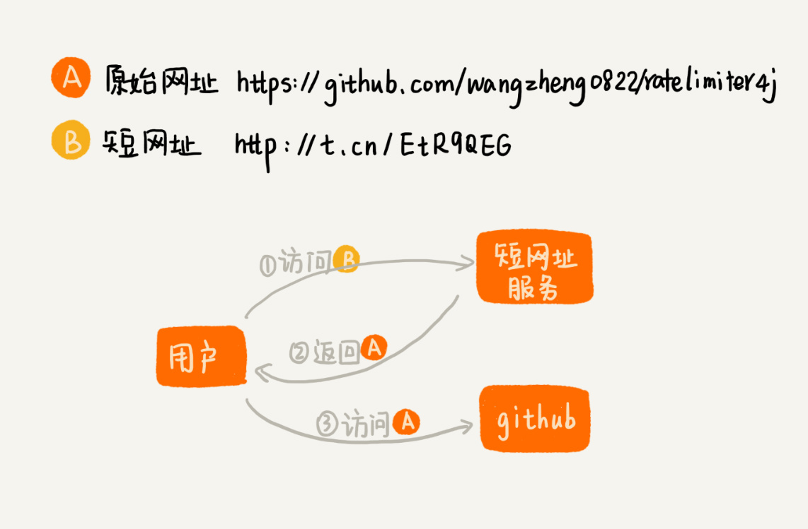

56 | 算法实战（五）：如何用学过的数据结构和算法实现一个短网址系统？
短网址服务你用过吗？如果我们在微博里发布一条带网址的信息，微博会把里面的网址转化成一个更短的网址。我们只要访问这个短网址，就相当于访问原始的网址。比如下面这两个网址，尽管长度不同，但是都可以跳转到我的一个 GitHub 开源项目里。其中，第二个网址就是通过新浪提供的短网址服务生成的。
原始网址：https://github.com/wangzheng0822/ratelimiter4j
短网址：http://t.cn/EtR9QEG
从功能上讲，短网址服务其实非常简单，就是把一个长的网址转化成一个短的网址。作为一名软件工程师，你是否思考过，这样一个简单的功能，是如何实现的呢？底层都依赖了哪些数据结构和算法呢？
短网址服务整体介绍
刚刚我们讲了，短网址服务的一个核心功能，就是把原始的长网址转化成短网址。除了这个功能之外，短网址服务还有另外一个必不可少的功能。那就是，当用户点击短网址的时候，短网址服务会将浏览器重定向为原始网址。这个过程是如何实现的呢？
为了方便你理解，我画了一张对比图，你可以看下。

从图中我们可以看出，浏览器会先访问短网址服务，通过短网址获取到原始网址，再通过原始网址访问到页面。不过这部分功能并不是我们今天要讲的重点。我们重点来看，如何将长网址转化成短网址？
如何通过哈希算法生成短网址？
我们前面学过哈希算法。哈希算法可以将一个不管多长的字符串，转化成一个长度固定的哈希值。我们可以利用哈希算法，来生成短网址。
前面我们已经提过一些哈希算法了，比如 MD5、SHA 等。但是，实际上，我们并不需要这些复杂的哈希算法。在生成短网址这个问题上，毕竟，我们不需要考虑反向解密的难度，所以我们只需要关心哈希算法的计算速度和冲突概率。
能够满足这样要求的哈希算法有很多，其中比较著名并且应用广泛的一个哈希算法，那就是MurmurHash 算法。尽管这个哈希算法在 2008 年才被发明出来，但现在它已经广泛应用到 Redis、MemCache、Cassandra、HBase、Lucene 等众多著名的软件中。
MurmurHash 算法提供了两种长度的哈希值，一种是 32bits，一种是 128bits。为了让最终生成的短网址尽可能短，我们可以选择 32bits 的哈希值。对于开头那个 GitHub 网址，经过 MurmurHash 计算后，得到的哈希值就是 181338494。我们再拼上短网址服务的域名，就变成了最终的短网址 http://t.cn/181338494（其中，[http://t.cn](http://t.cn/) 是短网址服务的域名）。
1. 如何让短网址更短？
不过，你可能已经看出来了，通过 MurmurHash 算法得到的短网址还是很长啊，而且跟我们开头那个网址的格式好像也不一样。别着急，我们只需要稍微改变一个哈希值的表示方法，就可以轻松把短网址变得更短些。
我们可以将 10 进制的哈希值，转化成更高进制的哈希值，这样哈希值就变短了。我们知道，16 进制中，我们用 A～E，来表示 10～15。在网址 URL 中，常用的合法字符有 0～9、a～z、A～Z 这样 62 个字符。为了让哈希值表示起来尽可能短，我们可以将 10 进制的哈希值转化成 62 进制。具体的计算过程，我写在这里了。最终用 62 进制表示的短网址就是http://t.cn/cgSqq。

2. 如何解决哈希冲突问题？
不过，我们前面讲过，哈希算法无法避免的一个问题，就是哈希冲突。尽管 MurmurHash 算法，冲突的概率非常低。但是，一旦冲突，就会导致两个原始网址被转化成同一个短网址。当用户访问短网址的时候，我们就无从判断，用户想要访问的是哪一个原始网址了。这个问题该如何解决呢？
一般情况下，我们会保存短网址跟原始网址之间的对应关系，以便后续用户在访问短网址的时候，可以根据对应关系，查找到原始网址。存储这种对应关系的方式有很多，比如我们自己设计存储系统或者利用现成的数据库。前面我们讲到的数据库有 MySQL、Redis。我们就拿 MySQL 来举例。假设短网址与原始网址之间的对应关系，就存储在 MySQL 数据库中。
当有一个新的原始网址需要生成短网址的时候，我们先利用 MurmurHash 算法，生成短网址。然后，我们拿这个新生成的短网址，在 MySQL 数据库中查找。
如果没有找到相同的短网址，这也就表明，这个新生成的短网址没有冲突。于是我们就将这个短网址返回给用户（请求生成短网址的用户），然后将这个短网址与原始网址之间的对应关系，存储到 MySQL 数据库中。
如果我们在数据库中，找到了相同的短网址，那也并不一定说明就冲突了。我们从数据库中，将这个短网址对应的原始网址也取出来。如果数据库中的原始网址，跟我们现在正在处理的原始网址是一样的，这就说明已经有人请求过这个原始网址的短网址了。我们就可以拿这个短网址直接用。如果数据库中记录的原始网址，跟我们正在处理的原始网址不一样，那就说明哈希算法发生了冲突。不同的原始网址，经过计算，得到的短网址重复了。这个时候，我们该怎么办呢？
我们可以给原始网址拼接一串特殊字符，比如“[DUPLICATED]”，然后跟再重新计算哈希值，两次哈希计算都冲突的概率，显然是非常低的。假设出现非常极端的情况，又发生冲突了，我们可以再换一个拼接字符串，比如“[OHMYGOD]”，再计算哈希值。然后把计算得到的哈希值，跟原始网址拼接了特殊字符串之后的文本，一并存储在 MySQL 数据库中。
当用户访问短网址的时候，短网址服务先通过短网址，在数据库中查找到对应的原始网址。如果原始网址有拼接特殊字符（这个很容易通过字符串匹配算法找到），我们就先将特殊字符去掉，然后再将不包含特殊字符的原始网址返回给浏览器。
3. 如何优化哈希算法生成短网址的性能？
为了判断生成的短网址是否冲突，我们需要拿生成的短网址，在数据库中查找。如果数据库中存储的数据非常多，那查找起来就会非常慢，势必影响短网址服务的性能。那有没有什么优化的手段呢？
还记得我们之前讲的 MySQL 数据库索引吗？我们可以给短网址字段添加 B+ 树索引。这样通过短网址查询原始网址的速度就提高了很多。实际上，在真实的软件开发中，我们还可以通过一个小技巧，来进一步提高速度。
在短网址生成的过程中，我们会跟数据库打两次交道，也就是会执行两条 SQL 语句。第一个 SQL 语句是通过短网址查询短网址与原始网址的对应关系，第二个 SQL 语句是将新生成的短网址和原始网址之间的对应关系存储到数据库。
我们知道，一般情况下，数据库和应用服务（只做计算不存储数据的业务逻辑部分）会部署在两个独立的服务器或者虚拟服务器上。那两条 SQL 语句的执行就需要两次网络通信。这种 IO 通信耗时以及 SQL 语句的执行，才是整个短网址服务的性能瓶颈所在。所以，为了提高性能，我们需要尽量减少 SQL 语句。那又该如何减少 SQL 语句呢？
我们可以给数据库中的短网址字段，添加一个唯一索引（不止是索引，还要求表中不能有重复的数据）。当有新的原始网址需要生成短网址的时候，我们并不会先拿生成的短网址，在数据库中查找判重，而是直接将生成的短网址与对应的原始网址，尝试存储到数据库中。如果数据库能够将数据正常写入，那说明并没有违反唯一索引，也就是说，这个新生成的短网址并没有冲突。
当然，如果数据库反馈违反唯一性索引异常，那我们还得重新执行刚刚讲过的“查询、写入”过程，SQL 语句执行的次数不减反增。但是，在大部分情况下，我们把新生成的短网址和对应的原始网址，插入到数据库的时候，并不会出现冲突。所以，大部分情况下，我们只需要执行一条写入的 SQL 语句就可以了。所以，从整体上看，总的 SQL 语句执行次数会大大减少。
实际上，我们还有另外一个优化 SQL 语句次数的方法，那就是借助布隆过滤器。
我们把已经生成的短网址，构建成布隆过滤器。我们知道，布隆过滤器是比较节省内存的一种存储结构，长度是 10 亿的布隆过滤器，也只需要 125MB 左右的内存空间。
当有新的短网址生成的时候，我们先拿这个新生成的短网址，在布隆过滤器中查找。如果查找的结果是不存在，那就说明这个新生成的短网址并没有冲突。这个时候，我们只需要再执行写入短网址和对应原始网页的 SQL 语句就可以了。通过先查询布隆过滤器，总的 SQL 语句的执行次数减少了。
到此，利用哈希算法来生成短网址的思路，我就讲完了。实际上，这种解决思路已经完全满足需求了，我们已经可以直接用到真实的软件开发中。不过，我们还有另外一种短网址的生成算法，那就是利用自增的 ID 生成器来生成短网址。我们接下来就看一下，这种算法是如何工作的？对于哈希算法生成短网址来说，它又有什么优势和劣势？
如何通过 ID 生成器生成短网址？
我们可以维护一个 ID 自增生成器。它可以生成 1、2、3…这样自增的整数 ID。当短网址服务接收到一个原始网址转化成短网址的请求之后，它先从 ID 生成器中取一个号码，然后将其转化成 62 进制表示法，拼接到短网址服务的域名（比如http://t.cn/）后面，就形成了最终的短网址。最后，我们还是会把生成的短网址和对应的原始网址存储到数据库中。
理论非常简单好理解。不过，这里有几个细节问题需要处理。
1. 相同的原始网址可能会对应不同的短网址
每次新来一个原始网址，我们就生成一个新的短网址，这种做法就会导致两个相同的原始网址生成了不同的短网址。这个该如何处理呢？实际上，我们有两种处理思路。
第一种处理思路是不做处理。听起来有点无厘头，我稍微解释下你就明白了。实际上，相同的原始网址对应不同的短网址，这个用户是可以接受的。在大部分短网址的应用场景里，用户只关心短网址能否正确地跳转到原始网址。至于短网址长什么样子，他其实根本就不关心。所以，即便是同一个原始网址，两次生成的短网址不一样，也并不会影响到用户的使用。
第二种处理思路是借助哈希算法生成短网址的处理思想，当要给一个原始网址生成短网址的时候，我们要先拿原始网址在数据库中查找，看数据库中是否已经存在相同的原始网址了。如果数据库中存在，那我们就取出对应的短网址，直接返回给用户。
不过，这种处理思路有个问题，我们需要给数据库中的短网址和原始网址这两个字段，都添加索引。短网址上加索引是为了提高用户查询短网址对应的原始网页的速度，原始网址上加索引是为了加快刚刚讲的通过原始网址查询短网址的速度。这种解决思路虽然能满足“相同原始网址对应相同短网址”这样一个需求，但是是有代价的：一方面两个索引会占用更多的存储空间，另一方面索引还会导致插入、删除等操作性能的下降。
2. 如何实现高性能的 ID 生成器？
实现 ID 生成器的方法有很多，比如利用数据库自增字段。当然我们也可以自己维护一个计数器，不停地加一加一。但是，一个计数器来应对频繁的短网址生成请求，显然是有点吃力的（因为计数器必须保证生成的 ID 不重复，笼统概念上讲，就是需要加锁）。如何提高 ID 生成器的性能呢？关于这个问题，实际上，有很多解决思路。我这里给出两种思路。
第一种思路是借助第 54 节中讲的方法。我们可以给 ID 生成器装多个前置发号器。我们批量地给每个前置发号器发送 ID 号码。当我们接受到短网址生成请求的时候，就选择一个前置发号器来取号码。这样通过多个前置发号器，明显提高了并发发号的能力。

第二种思路跟第一种差不多。不过，我们不再使用一个 ID 生成器和多个前置发号器这样的架构，而是，直接实现多个 ID 生成器同时服务。为了保证每个 ID 生成器生成的 ID 不重复。我们要求每个 ID 生成器按照一定的规则，来生成 ID 号码。比如，第一个 ID 生成器只能生成尾号为 0 的，第二个只能生成尾号为 1 的，以此类推。这样通过多个 ID 生成器同时工作，也提高了 ID 生成的效率。

总结引申
今天，我们讲了短网址服务的两种实现方法。我现在来稍微总结一下。
第一种实现思路是通过哈希算法生成短网址。我们采用计算速度快、冲突概率小的 MurmurHash 算法，并将计算得到的 10 进制数，转化成 62 进制表示法，进一步缩短短网址的长度。对于哈希算法的哈希冲突问题，我们通过给原始网址添加特殊前缀字符，重新计算哈希值的方法来解决。
第二种实现思路是通过 ID 生成器来生成短网址。我们维护一个 ID 自增的 ID 生成器，给每个原始网址分配一个 ID 号码，并且同样转成 62 进制表示法，拼接到短网址服务的域名之后，形成最终的短网址。
课后思考
- 如果我们还要额外支持用户自定义短网址功能（http//t.cn/{用户自定部分}），我们又该如何改造刚刚的算法呢?
- 我们在讲通过 ID 生成器生成短网址这种实现思路的时候，讲到相同的原始网址可能会对应不同的短网址。针对这个问题，其中一个解决思路就是，不做处理。但是，如果每个请求都生成一个短网址，并且存储在数据库中，那这样会不会撑爆数据库呢？我们又该如何解决呢？
今天是农历的大年三十，我们专栏的正文到这里也就全部结束了。从明天开始，我会每天发布一篇练习题，内容针对专栏涉及的数据结构和算法。从初一到初七，帮你复习巩固所学知识，拿下数据结构和算法，打响新年进步的第一枪！明天见！